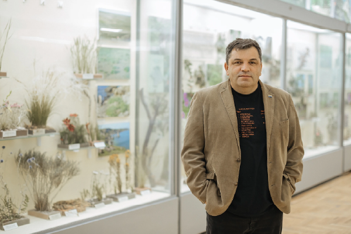
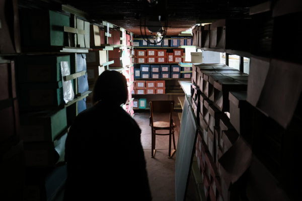
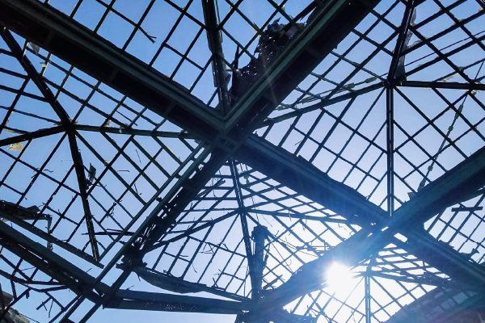
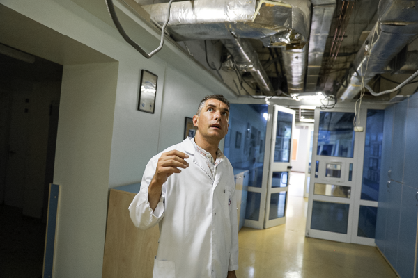

Інститут проблем кріобіології і кріомедицини
~ 500000 грн
Допомога українським вченим, які постраждали від війни


Історії
До початку повномасштабного вторгнення у Державному архіві Херсонської області зберігалося понад 970 тисяч архівних документів. Але, відступаючи з окупованого Херсона, росіяни викрали третину колекції.

Історії
З початком повномасштабного вторгнення матеріальну базу інституту на Херсонщині пограбували. Поля заміновані, а будівлі наукових корпусів та лабораторії зруйновані російськими окупантами.

Відмічайте наукову галузь, яка вас цікавить – знаходьте та залучайте українських вчених до власних проєктів
До повної бази науковцівФормалізований та впорядкований досвід українських вчених зі збереження наукових праць, колекцій та установ
Показати всі дослідження